Workshop Recording to come
Workshop Overview
Processing RNAseq Data
Converting RNASeq data into gene counts is the first-step prior to analysis of the biological function and networks revealed through the subsequent transcription analysis. This process is outside the scope of this workshop but if you are interested Andres et al 2013 Provides an excellent overview of the processes involved.
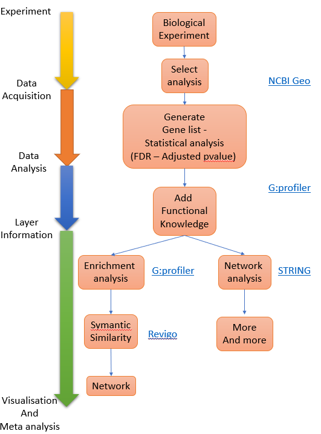 Figure 1. Process overview
Dataset to use - Geo:GDS2565
Panopto_walk_through
Key Statistical Concepts
The workshop will use tools that exploit statistical approaches to identify differential expressed genes (DEGs) and subsequently identify the biological pathways or processes that are over represented (some time refereed to as enriched) within the DEGs. You will not need to derive the mathematical formula underpinning these concepts or deploy the algorithums from first principles since the software you will use does this for you but it is worth knowing the background. There is an excellent academic from Stanford University Name Prof Josh Starmer who runs a youtube channel called StatQuest this deal with a large range of biological stats and has some great annotations to explain them, I am going to suggest you watch two of his videos to orientate you about the key statistical concepts for this session:
False Discover Rate
Fisher’s Exact Test and Enrichment Analysis
Mining GEO database
Geo Workshop
- Search for you dataset
Go to Geo DataSets: (https://www.ncbi.nlm.nih.gov/gds/)[https://www.ncbi.nlm.nih.gov/gds/]
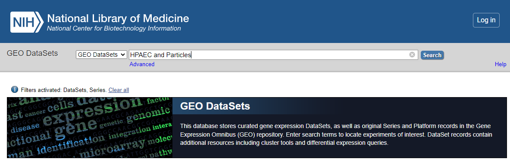 GEO_DataSet Search
now select
- Refine search to only show ‘DataSets’ and ‘Series’
Select < DataSets and Series > from the left hand menu.
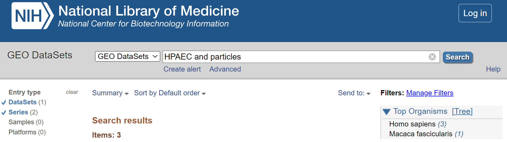 Refine to DataSets
3A. Select procesed dataset (should be number 3 in list and have a heat map icon to the right)
Click on title < Endothelial cell response to ultrafine particles > to select DataSet
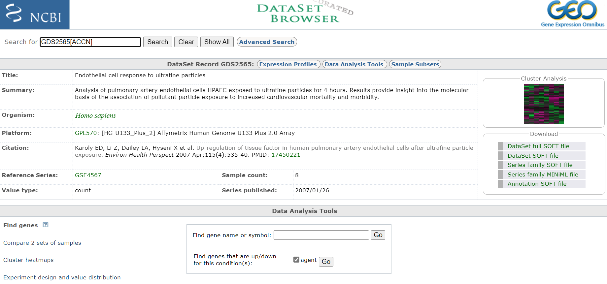 Entry Page
Take notes off all pertinent information about the experiment, including species and what microarray platform was used. In this case experiment was conducted on rats and analysed on an Affymetrix Human Genome U133 Plus 2.0 Array. Download any publication available. Also, if you are interested you could have a look at the cluster analysis on the right hand site. This will show you how the relationship of the expression profiles from each sample relative to each other. If the experiment was successful, all samples of a certain treatment should cluster together.
4A. Compare experiment samples
Click <Compare 2 sets of sample>
Choose <test e.g. One-tailed t-test (A > B)>
Choose
Click on: Step 2: Select which Samples to put in Group A and Group B
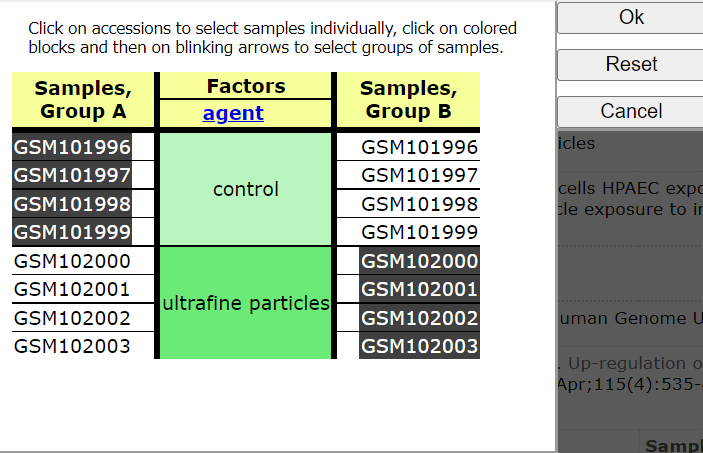 Select Groups to compare
Choose < Query Group A vs B >
You should now see a list of the following DEGS
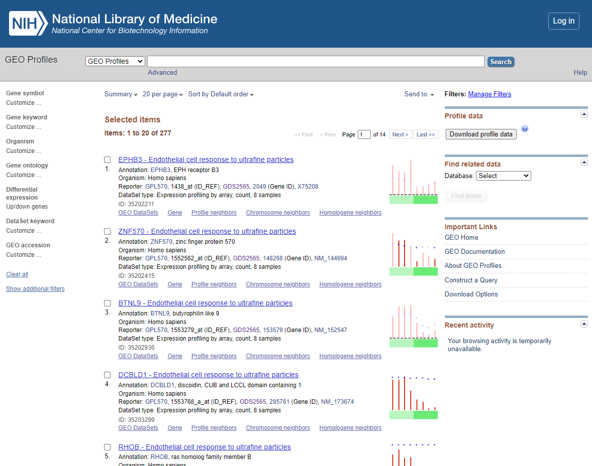 DEG List
5A. Download DEGs
You have >100 DEGs but the page only displays the first 20. Before downloading DEGS change the items per page from 20 to 500.
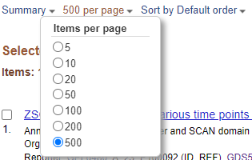 Items Per Page
Select < Download profile data >
and you will be prompted to save the profiling of the DEGs displayed as default file name <profile_data.txt>
Save to appropriate location. If needed Select Page 2…. of the DEGS and repeat the download process.
Repeat this process for <test e.g. One-tailed t-test (B > A) significance level 0.001 >_
6A. Open and Merge DEG lists in Excel
The DEG lists show the gene list with there relative expression level (normalised) and annotation for the genes involved (annotation shown in columns BG ->). For Our next steps we will use the Gene symbol that is in Column BH.
3B. Select un-processed series (should be number 2 - it will have icon < Analyze with GEO2R > at the end of the entry)
Click on < Analyze with GEO2R >
Now Define groups by click clicking the < Define Group pull > down and create groups ‘control’ and ‘Treatment’ (enter group name and press enter). Click on each sample in list and associated it with one of your group (you can hold ctrl down to select multiple entry before associating them with the group).
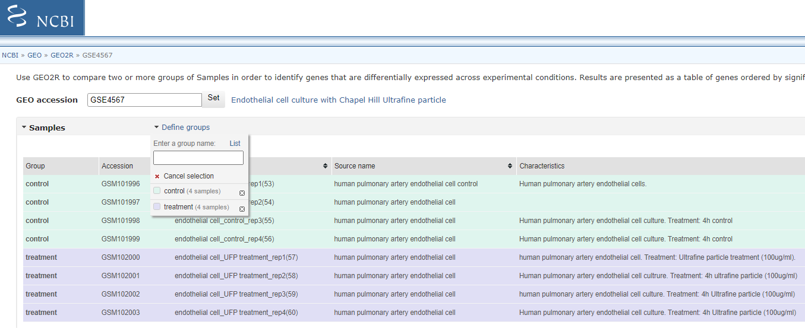 Select Groups to compare
4B. Customise the Option and Analyse
Select < Options > and customise as shown below:
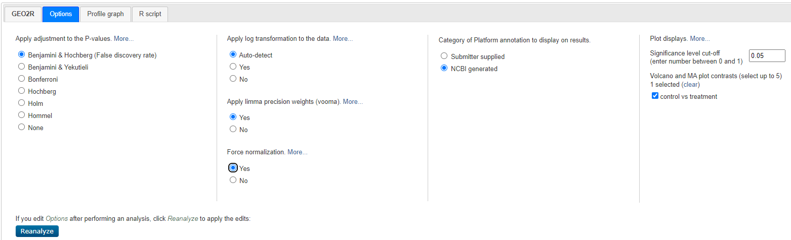 Geo2R Options
Select < reanalyze >
Will will now see a Processing icon - this may take a minute or two.
5B. DEGs
You will now see a table and a series of Visualisations - review the visualisation taking note of what each are showing you.
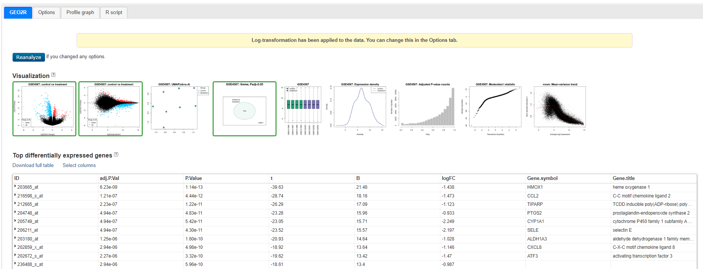 Geo2R results
Venn diagram showing GSE4567: Limma, Padj<0.05 - 704 genes - this is the set we will use
Click on < Explore and download, control vs treatment and Download Significant genes >
This will give you a Tsv you can open in excel
6B DEG TSV
Open the DEG TSV - you will have ID (Affymetrix), Gene Symbol, Description and Log2(fold Change) and Adjusted p-value. The Gene.symbol can have multiple symonyms for each gene - this can bias future analsyis. Copy/paste gene symbol column to rught hand column (so no other data is on right), and use < Data > Text to Columns > Delimited > Other > ‘/’ > Finish >_ to push secondary symbols into other columns.
GEO Database Panopto
Enrichment Analysis - gprofiler
gprofiler provide a great tool for performing enrichment analysis, it also has associated tools for ID conversations and Orthology searching. As well as interrogating enrichment for (Gene Ontology)[http://geneontology.org/] terms and pathways (it uses (reactome)[https://reactome.org/] it also exploits physical position linked properties such as transcription factor binding sites and miRNSA binding to provide additional evidence of linkages between DEGs. Another function that is exceptionally useful is the ability to provided two gene lists and compare the enrichment side-by-side. To do this place ‘> title of list 1’ before the first list and ‘> title of list 2’ (and so on for as many list as you want) before submitting your enrichment analysis Note the essential element is the ‘>’ sign but also remember to select < Run as multiquery > if you want this option..
- Load you DEG list
Paste you DEG list into the box and click on < Run query > (I suggest you select Benjamin-Hochberg FDR under Advanced options)
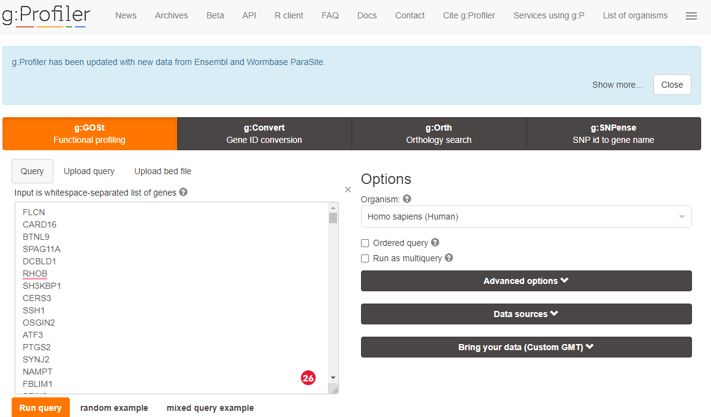 gprofiler upload data
You may be asked if you wish to confirm gene identified - if you are accept the selected options.
- Review Enrichment
You will be presented with and enrichment summary.
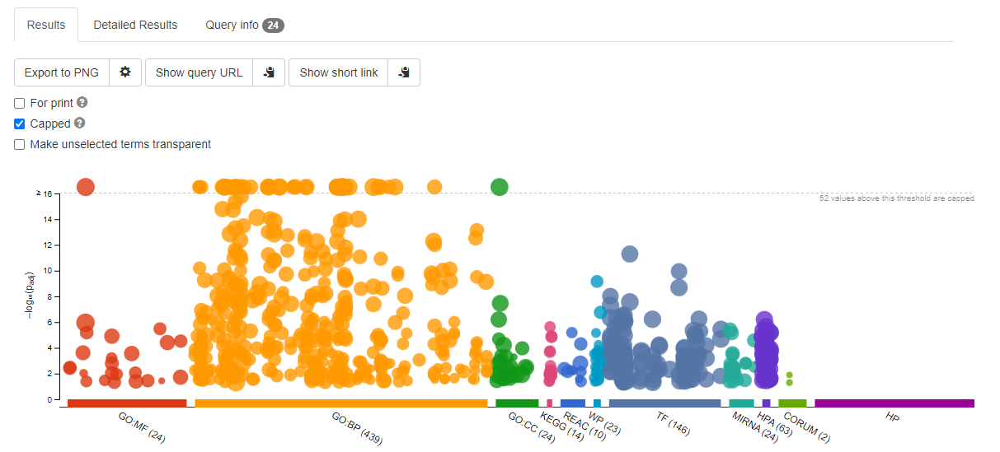 Enrichment Summary
Here the y-axis is -log10(adjPValue) - so the larger the number the more improbably the functional representation is there by random. The size of the symbols represent the number of genes in each category.
Now select < Detailed Results > this is a tab that is displayed about halfway down the page
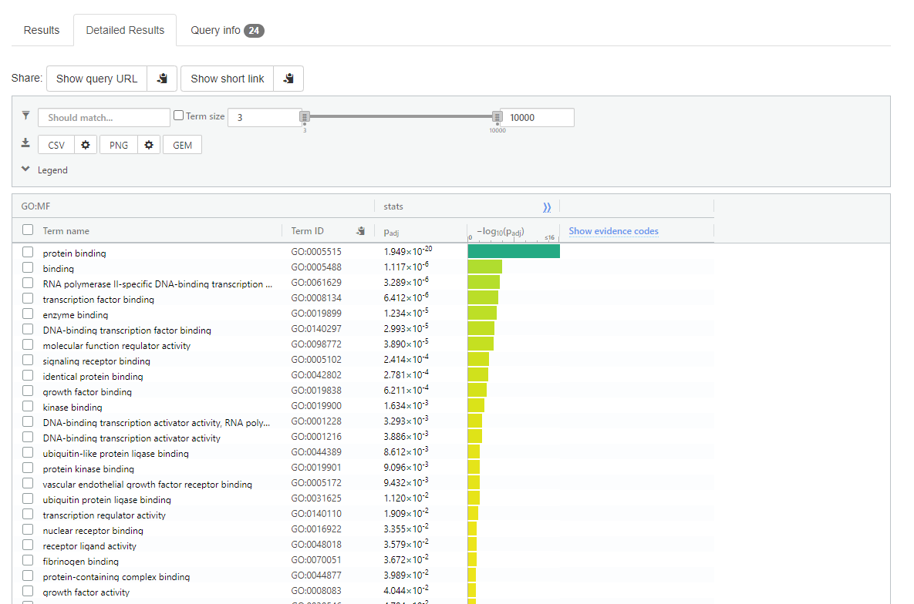 gprofiler detailed results
Note:
Adjusted p-value if give next to each term
Top of the detailed results page there is ‘CSV’ option to download the data into a spreadsheet format.
- Consider the Transcription Factor enrichment.
Gene regulation is at the heart of DEGs - co-regulated gene should should have direct or indirect regulatory network moderated through conserved transcription factor binding sites.
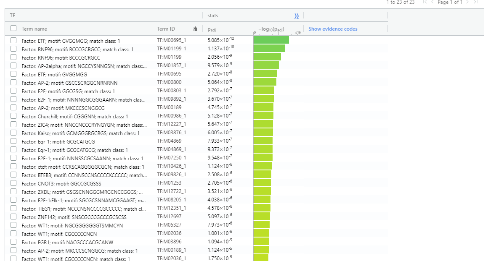 Transcription Factor enrichment
gprofiler panopto
Database for Annotation, Visualization and Integrated Discovery - DAVID
David Web site - https://david.ncifcrf.gov/
Gene Enrichment Analysis with David
[David - Database for Annotation, Visualization and Integrated Discovery] (https://david.ncifcrf.gov/) was the tool to use for gene enrichment from 2005 - 2016 but the database it hosted became out of date due to a break in the research groups funding. From 2016 (gprofiler)[https://biit.cs.ut.ee/gprofiler/gost] and (stringdb)[https://string-db.org/] have been prefered because they have been kept upto date. However, DAVID was refunded and a 2021 update means it is back to being maintained. Although there will not be time to explore it in our workshop the following workshop and video is there to support anyone wanting to explore its functionality.
1. Start analysis and upload you data
Select < start analysis >
Paste in you gene list (1) in box (A) and, select identifier (2), and identify as a Gene List (3). Select your species (2a) . In more nuanced analysis you may wish to define your own background - this is useful when working with non-model organisms or if your starting population does not represent the entire genome.
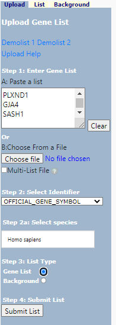 DAVID Upload
now select < Submit List >
2. Generate Functional Analysis of gene list
If you have used a non-regulate gene identifier or it does not recognize the identifier type you have used it may ask you to convert the identifiers - check the programs suggestion - it is usually good but you should check.
Select < Functional Annotation Tool >
You will now be give a annotation summary as shown below:
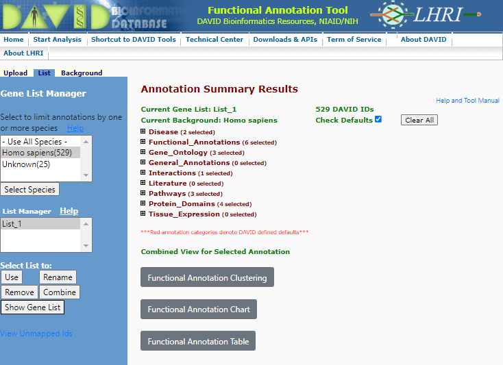 Annotation Summary
You will see a range of categories for which the functional annotation has been performed. The analysis told has not only cross referenced the gene list against a range of functional databases it has also analysed the gene co-appearance in citations (Literature), links to disease (Disease) and Interactions agonist other linkages.
3. Review Gene Ontology Enrichment
Let us consider the functional enrichment using (Gene Ontology)[http://geneontology.org/]. Gene Ontology categorizes gene products using three distinct characteristics - Molecular Function (biochemistry of the product), Cellular Component (where it appears in the cell), and the Biological Processes - see more about these classification by reviewing the (Gene Ontology Overview documentation)[http://geneontology.org/docs/ontology-documentation/]. Although ontologies are hierarchical, they are not a simple classification system, they not only allow for gene products to be involved with multiple processes the relationship between elements in the hierarchy are closely defined. The ontology also allows for classification to be as specific or detailed as knowledge allows ie if a protein is a transporter but what it transports is not known it will be defined by a mid-level term ‘transporter’ but if it is known to transport Zn it will be classified at a ‘Zinc transport’ as well as a ‘transporter’. Enrichment analysis uses fisher exact test (see about) to calculate the enrichment at each of these ‘levels’ - although I usually choose to look at the integrated data summarized under the ‘GOTERM_[BP/CC/MF]_DIRECT’.
click on the + next too the < Gene_Ontology > category
Select < Chart > right of the GOTERM_BP_DIRECT
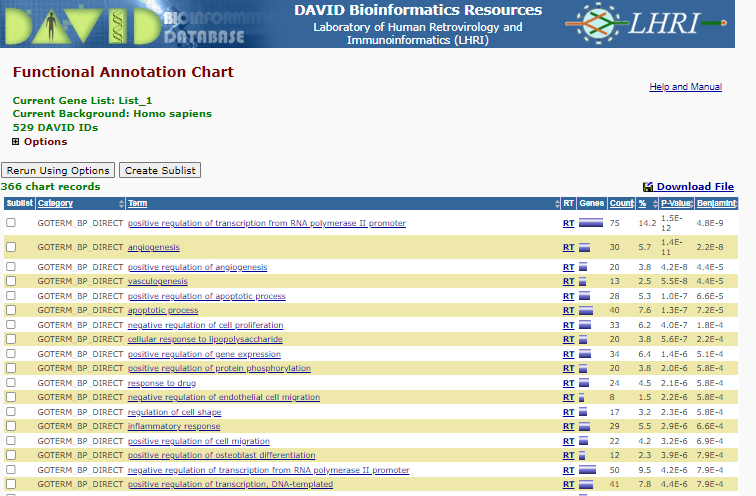 BP Enrichment
Note the P-value and benjamini correct p-value displaying the like hood that those specific Go terms are represented by random - i.e. lost the P-value the less likely the representation of the term is a random select , therefore the more likely the term is enriched.
To see the list of gene involved in for instance ‘positive regulation of osteoblast differentiation’ click on the blue bar under the ‘Genes’ column.
This is the list you will see:
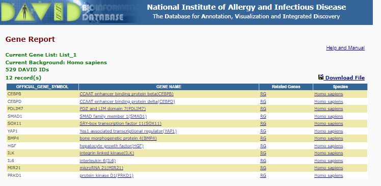 positive regulation of osteoblast differentiation
Now review enrichment for Cell Component and Molecular Function.
4. Pathway analysis
click on the + next too the < Pathways > category
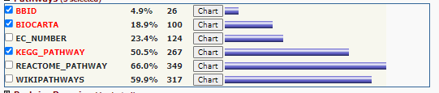 Pathway Options
Select < Chart > right of the KEGG
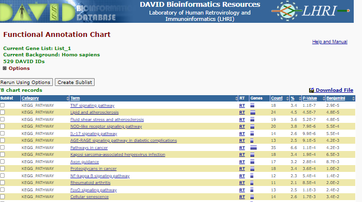 KEGG Enrichment
You will see a list of enriched pathways - Note the P-value and benjamini correct p-value displaying the like hood that those specific pathways are represented by random - i.e. lost the P-value the less likely the representation of the pathway is a random select, therefore the more likely the pathways is enriched.
click on the < TNF Signalling Pathway >_ in the term column
This will display the pathway with the terms that are present in the list shown with red stars or highlight by redtext below the figure.
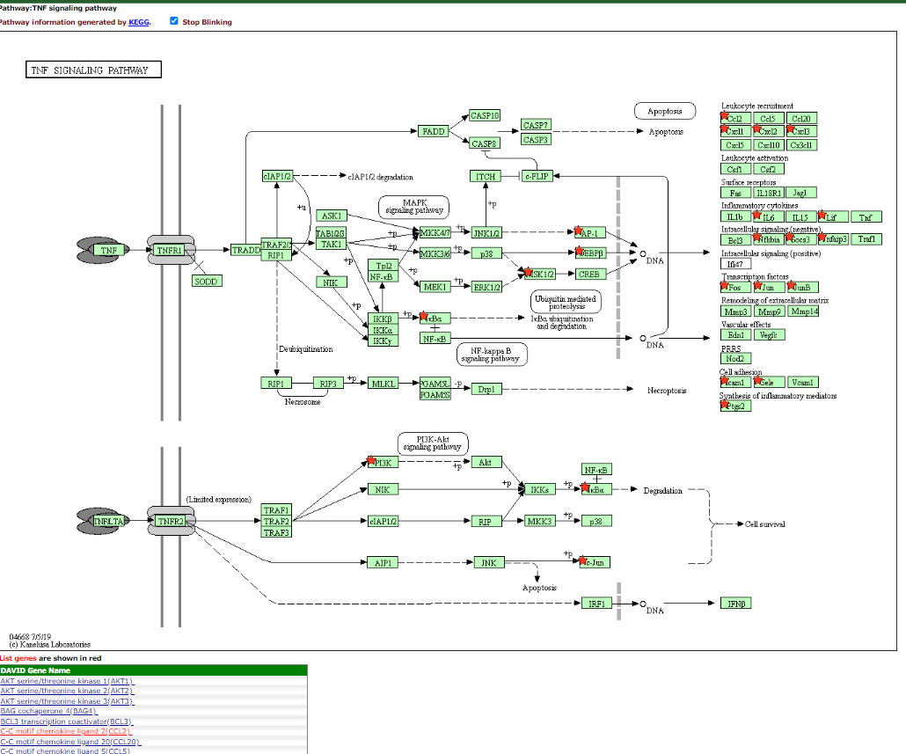 TNF Signalling Pathway
Explore some more pathways
5. Functional Annotation Clustering
DAVID attempts to summarise enrichment between categorization systems using a tool it terms - Functional annotation clustering. If you select this for you current data set. you will be provided with the following clusters:
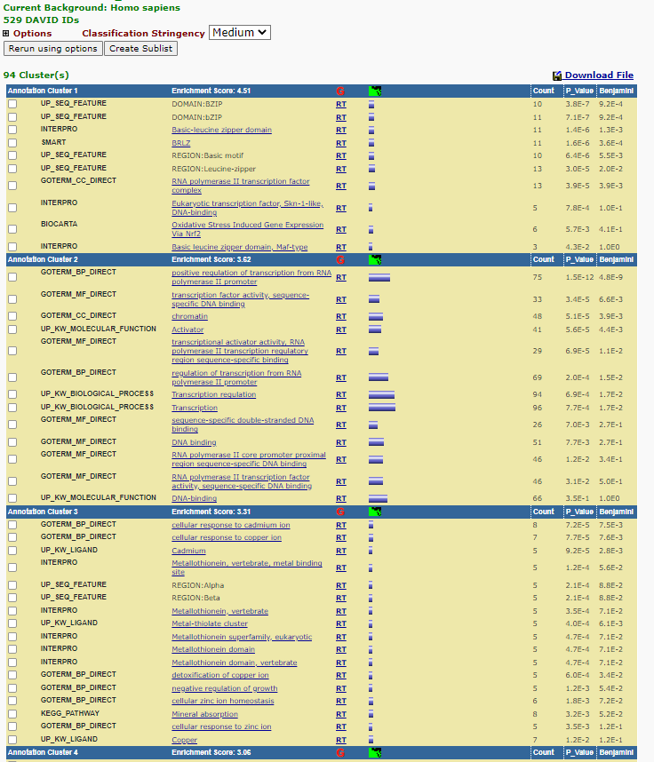 Functional Annotation Clustering
Each cluster is assigned an enrichment score under which ‘terms’ that are enriched under different classification systems are displayed grouped together. Each ‘grouping’ is given a ‘Enrichment Score’ the larger the enrichment score the higher the score the more likely that cluster is being enriched. Note that the is a ‘Classification Stringency’ pull down menu that allows you to define the strength of associated of the term being grouped together.
For annotation Cluster 6 (which contains lots of Metallothionein/cadimum associated terms) there is a small green and black box - after the Enrichment Score and the ‘G’ - click on this box. This brings up a cluster matrix showing the gene gene products on the Y-axis and the classification ‘vlasses’ on the X-axis.
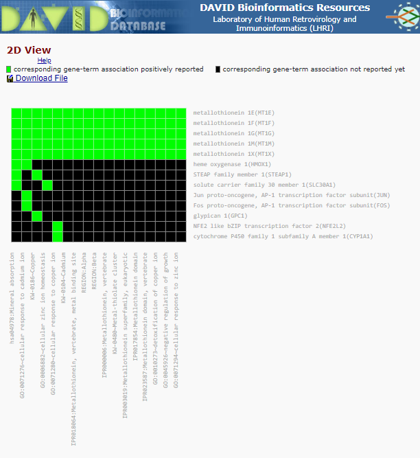 Cluster Matrix
Enrichment with David Panopto
STRING
- Login to String-db
Open String-db and login using an appropriate account
- Upload your data
Select < My data > from top menu
Select < create new gene set > under < Your stored gene sets >
Give you Gene List a Name, select Homo sapiens as species and past in your gene symbols
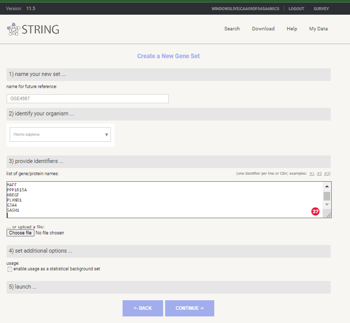 New Gene Set in STRING-db
Select < continue >
if asked to review mappings < please review the mappings … > select continue
- Explore Gene Enrichment
Review stored Gene set and select < analyse >
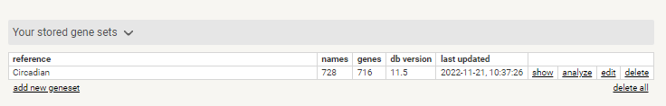 Stored Gene Set in STRING-db
Review Enrichment analysis
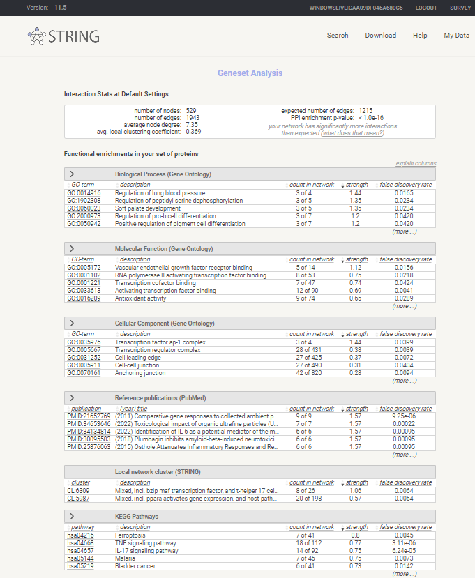 Enrichment analysis in STRING-db
- Create you Gene Network
Return to you dataset and now select < show >
Select < view as a interactive network >
You will now see a very large and detailed network - go to bottom on page and select settings and change to match the following settings. The select < update >
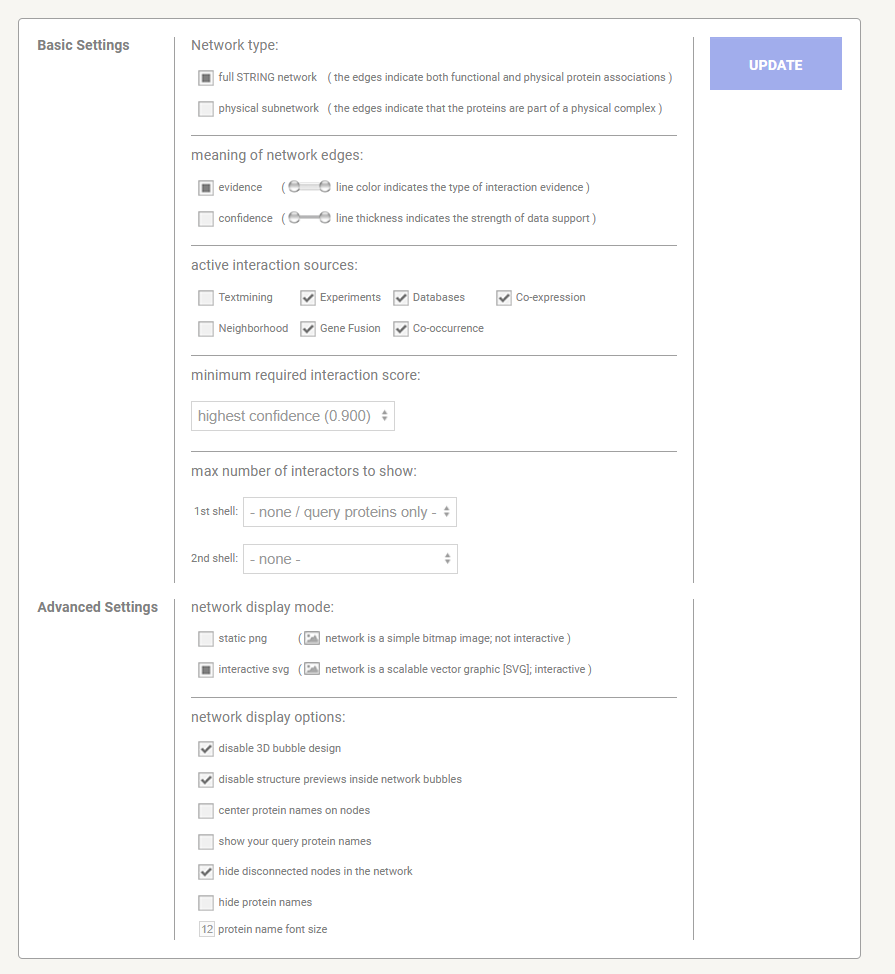 STRING-db Settings
First_network
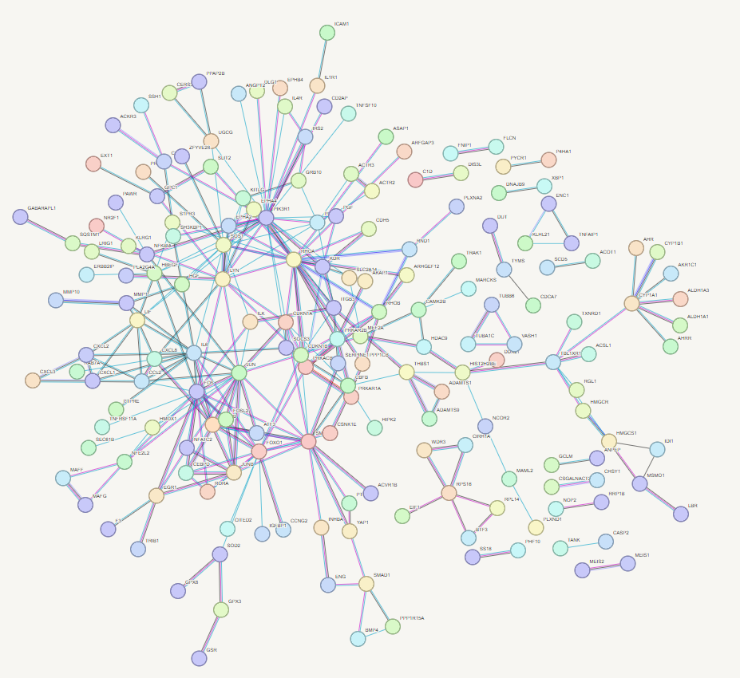 STRING-db Network
Now play and refine your network - try clusting using 3 clusters
STRING Panopto
Semantic similarity with Revigo
Revigo can take long lists of Gene Ontology terms and summarize them by removing redundant GO terms using semantic similarity. The input you need is a list of GO terms in the format GO:[NUMBER] a tab and the associated p-value.
1. Export GO terms and P-values
1A. gprofiler
Under the detailed results menu there is a CSV icon which when clicked can be used to export your enriched terms as a CSV which can then be imported into excel. You can use the associated setting button (the cog symbol next toi the CSV) to select only GO terms to export for this exercise.
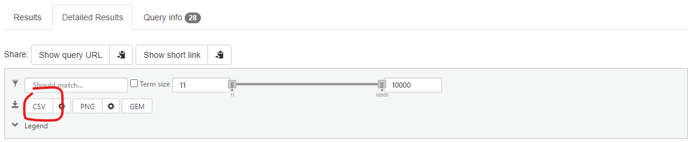 gprofiler export
You will then need to copy column C and D into Revigo
1B. DAVID
After you have completed the functional analysis select < Gene_ontology > GOTERM_BP_DIRECT > Chart >
now Select < Download File >
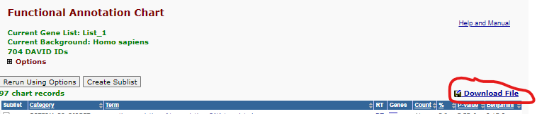 DAVID Go Download
This will either display the enrichment table into the browser window or ask for a save location depending on your browser settings. If you are not asked for a save location right hand click the displayed table and select Save as and save to a appropriate location as a text file. This text file can be opened/imported into excel. You will file the GO term is concatenated with the GO description in Column B. To split this insert a blank column after column B, then select column B and select menu option < Data > Test to columns >. Select < Delimited > Next >_ and use the radio button to select other and add a ~_ to the box directly to the right of this option. Now click < Next and Finish >. You will see the GO term in now in Column B and the P-value in column F. Select these columns and paste them into Revigo.
You should now repeat this process for Molecular Function and Cell Component Terms.When all the data is merged you can paste the GO term and P value into Revigo.
2. Revigo data entry
Enter GO terms and P-values into Revigo - they should be in format
Term PValue
GO:0045892 7.75E-06
GO:0006694 3.29E-04Leave the default settings and select < Start Revigo >
3. Review Revigo Results
For each GO term category Revigo will generate a Scatterplot, Table, 3D scatter plot, interactive Graph and Tree Map. Note: at the bottom of each plot there are export options for R and other formats _.
The most intuitive format is are the Tree Maps (see below) whilst the Scatterplot output table, which include terms like ‘Frequency and Uniqueness’ can be used to create networks in Cytoscape.
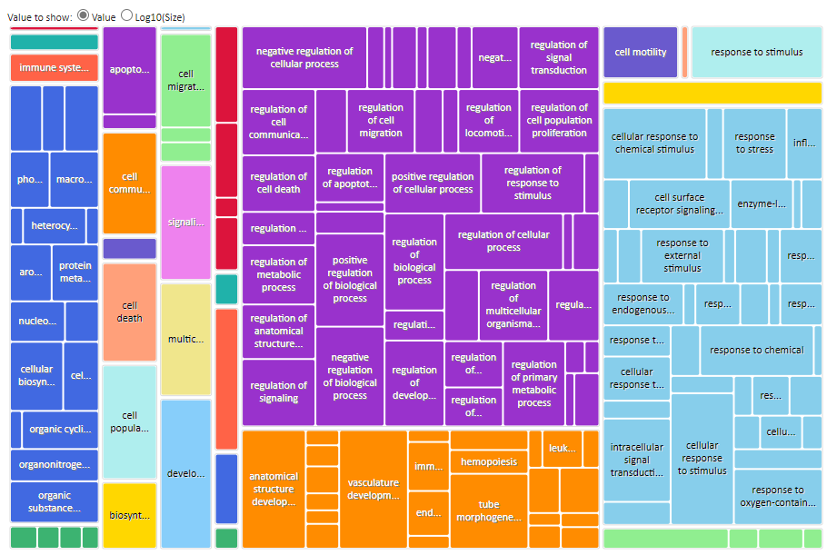 Revigo BP TreeMap